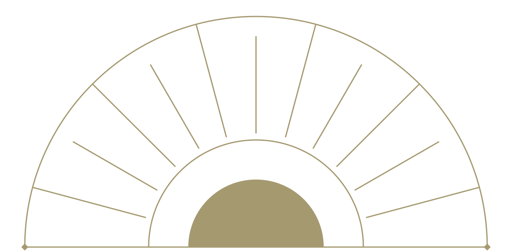

01
Primeiro contato
Você conta a sua situação pelo formulário, em poucos minutos e sem compromisso.
Assessoria previdenciária · Maternidade
Assessoria previdenciária especializada para orientar mulheres e famílias na compreensão dos seus direitos e benefícios junto à Previdência Social.
Atendimento presencial na Vila Formosa, São Paulo – SP

Nossa principal área de atuação
A maternidade é uma fase especial, mas também pode trazer dúvidas sobre direitos previdenciários e benefícios. A M&L Advocacia e Assessoria oferece orientação individualizada para ajudar mulheres a compreenderem a sua situação e identificarem possíveis direitos perante a Previdência Social.
Orientação sobre o benefício em casos de parto, adoção ou guarda para fins de adoção.
O que costuma ser exigido na sua situação e como organizar os documentos.
Verificação do seu histórico e da sua condição de segurada junto ao INSS.
Orientação sobre contribuições como empregada, autônoma, MEI ou facultativa.
Análise de outros direitos relacionados à maternidade que possam se aplicar ao seu caso.
Orientação e acompanhamento em pedidos administrativos e, quando cabível, nas medidas jurídicas.
Como funciona o atendimento
Você conta a sua situação pelo formulário, em poucos minutos e sem compromisso.

A equipe reúne as informações necessárias para compreender o seu caso.

Avaliação individualizada da sua situação previdenciária, com linguagem clara.

Apresentação dos próximos passos e acompanhamento, quando contratado. Procuração e contrato são assinados on-line, pelo celular.
A análise de cada caso é individual. A M&L não promete a concessão de benefícios nem resultados, que dependem dos requisitos legais e da decisão do INSS ou do Poder Judiciário.
Começar pelo formulárioAtendimento
Converse com o nosso assistente: ele faz algumas perguntas rápidas para compreendermos o seu caso e direcionarmos o seu atendimento.
Por que escolher a M&L
Escuta atenta e linguagem acessível, respeitando o momento que você está vivendo.
Cada história é única. A orientação parte da sua situação concreta, não de respostas prontas.
Explicamos as possibilidades, os requisitos e os limites de cada caminho, sem promessas.
Atuação dedicada às questões da Previdência Social, com atenção especial à maternidade.
Atuação pautada pelo Código de Ética e pelas normas da Ordem dos Advogados do Brasil.
Você sabe em que etapa está o seu caso e quais são os próximos passos.
Sobre a M&L
A M&L Advocacia e Assessoria é um escritório comprometido com a orientação jurídica e previdenciária, oferecendo atendimento próximo, responsável e individualizado.
Acreditamos que entender os próprios direitos é o primeiro passo para decidir com segurança. Por isso, cada atendimento começa por ouvir a sua história e termina com uma explicação clara dos caminhos possíveis.
Outras áreas de atuação

Verificação dos requisitos de idade e de contribuição, incluindo as regras de transição.

Análise de quem já contribuía antes da Reforma da Previdência de 2019.

Estudo do seu histórico para entender quando e como se aposentar da melhor forma.

Orientação aos dependentes sobre o direito à pensão, a documentação e a duração.

O antigo auxílio-doença, para quem está temporariamente impossibilitado de trabalhar.

Para quem não tem condições de voltar a trabalhar de forma permanente.

Benefício assistencial para pessoa idosa ou com deficiência em situação de baixa renda.

Verificação de possíveis erros de cálculo ou de períodos não considerados pelo INSS.

Tem outra dúvida sobre a Previdência Social? Conte-nos a sua situação.
O nosso compromisso
Perguntas frequentes
As respostas são informativas e gerais. Cada situação precisa de análise individual.
Analisar o meu casoÉ um benefício da Previdência Social pago, em regra, por 120 dias, em caso de parto, adoção ou guarda judicial para fins de adoção. Também é devido, por período menor, em caso de aborto não criminoso.
Pode ter direito quem tem a chamada qualidade de segurada do INSS. Isso inclui empregadas com carteira assinada, empregadas domésticas, trabalhadoras avulsas, autônomas, MEI, contribuintes facultativas e trabalhadoras rurais (seguradas especiais). Cada situação tem requisitos próprios.
Em regra, é preciso ter vínculo com a Previdência Social na data do parto ou da adoção. Trabalhadoras rurais, por exemplo, podem ter direito comprovando a atividade, mesmo sem contribuições em dinheiro.
Desde 2024, após decisão do Supremo Tribunal Federal, deixou de ser exigido um número mínimo de contribuições (carência) para autônomas e contribuintes facultativas. A contribuição, porém, precisa ser válida e feita dentro das regras e dos prazos do INSS. Por isso, cada caso deve ser analisado.
Pode, desde que ainda mantenha a qualidade de segurada na data do parto ou da adoção. Depois de deixar de contribuir, a pessoa continua protegida pelo INSS durante o chamado período de graça.
Em regra, esse período é de 12 meses após a última contribuição, podendo ser prorrogado em algumas situações previstas em lei. Para quem contribuía como facultativa, o prazo é menor.
Para empregadas com carteira assinada, em geral o pagamento é feito pela própria empresa. Nos demais casos, o pedido é feito ao INSS, pelo site ou aplicativo Meu INSS ou pela Central 135.
Depois do pedido, o INSS analisa os requisitos e pode solicitar documentos complementares. Acompanhar o andamento no Meu INSS é importante para não perder prazos.
Em geral, documento de identificação com foto e CPF, certidão de nascimento da criança ou termo de adoção ou guarda, e documentos que comprovem o vínculo com o INSS, como carteira de trabalho, comprovantes de contribuição ou o extrato do CNIS.
Trabalhadoras rurais precisam de documentos que comprovem a atividade. A lista exata depende de cada situação.
O primeiro passo é entender o motivo informado na decisão, disponível no Meu INSS. Conforme o caso, pode ser possível apresentar recurso administrativo dentro do prazo indicado na decisão, fazer um novo pedido com documentos complementares ou buscar a via judicial.
A escolha do caminho depende da análise do caso e dos documentos disponíveis.
Não é necessário. Quando você decidir seguir com o atendimento, enviamos a procuração e o contrato para assinatura eletrônica pelo Autentique. Você recebe o link pelo WhatsApp ou por e-mail e assina pelo celular ou computador, em poucos minutos.
A assinatura eletrônica tem validade jurídica nos termos da Lei nº 14.063/2020. No momento da assinatura, o Autentique pede a confirmação dos seus dados, como nome e CPF, para identificar quem assinou.
Avaliamos as informações e os documentos que você fornecer, como o histórico de contribuições e a situação de trabalho na época do parto ou da adoção. A partir disso, explicamos as possibilidades, os requisitos e os próximos passos.
A análise não garante a concessão do benefício, que depende do cumprimento dos requisitos legais e da decisão do INSS ou do Poder Judiciário.
Pela regra geral criada pela Reforma da Previdência (Emenda Constitucional 103/2019), as mulheres precisam de 62 anos de idade e 15 anos de contribuição. Os homens precisam de 65 anos e 20 anos de contribuição, ou 15 anos para quem já contribuía antes da reforma.
Quem já contribuía antes de novembro de 2019 pode se enquadrar em regras de transição. Vale analisar qual regra é mais vantajosa.
A pensão por morte é paga aos dependentes de quem era segurado do INSS ou já aposentado, como cônjuge ou companheiro(a), filhos menores de 21 anos ou com deficiência e, em algumas situações, pais ou irmãos.
O valor e a duração variam conforme a idade do dependente, o tempo de casamento ou de união estável e as contribuições do segurado.
Não. O BPC/LOAS é um benefício assistencial de um salário mínimo, destinado à pessoa idosa com 65 anos ou mais ou à pessoa com deficiência, em situação de baixa renda conforme os critérios legais. Não exige contribuições ao INSS, mas exige inscrição atualizada no CadÚnico.
Quando há indícios de erro no cálculo, de períodos de trabalho ou contribuições não considerados ou de aplicação incorreta de regras. Em regra, a revisão deve ser pedida em até 10 anos, contados conforme o caso. Uma análise do processo e do CNIS indica se a revisão é viável.
Informações gerais revistas em novembro de 2026. As regras previdenciárias podem mudar; a orientação para o seu caso é sempre individual.
Localização
WhatsApp e telefone
+55 11 97273-2213